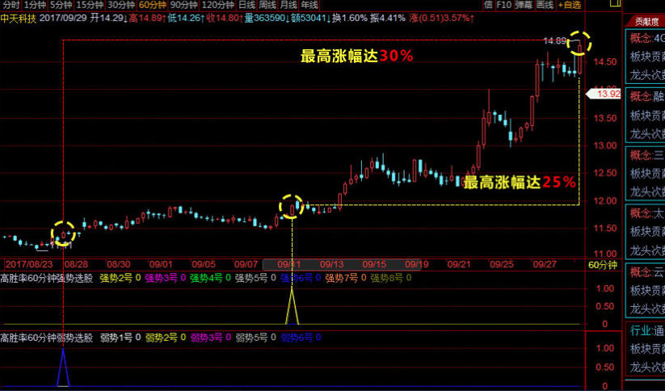

地利战法的核心是［选股］
而选股的核心在于有［顶尖的选股策略］
1.地利战法拥有超高历史成功率，地利战法的选股策略从市场上700多种投资策略中精选出14种成功率高、可稳定收益的选股策略，并进行了长达五年上千万次历史回测。
2.地利战法为了捕捉更多的和更细腻投资机会，采用的计算周期是60分钟周期指标，这样就可以全面掌握数据实时变化情况后作出分析结果，在全国首创全推数据＋实施选股，用更科学的方式解决选股难题。
3.地利战法的选股注重位置，有了好位置就形成了天然的地利优势，为了寻求更有利的位置，拒绝追高买入的尴尬局面。地利战法只采用起涨点买入，横盘突破买入和抄底买入三种选股方法，有效解决了位置的选择重要性。
止盈：9%
止损：10%
通过地利战法可以解决投资者的买卖点困难，会有效的避免了一买就跌、一卖就涨的 悲剧！！！
通过高胜率60分钟强势策略，及弱势策略的相关条件下，选择出优势个股
随时、随地一键选出高质量股票，每天三次选股票机会
中级培训课
地利战法课
现价980/季
原价6980/季
赠送：地利指标＋智能选股